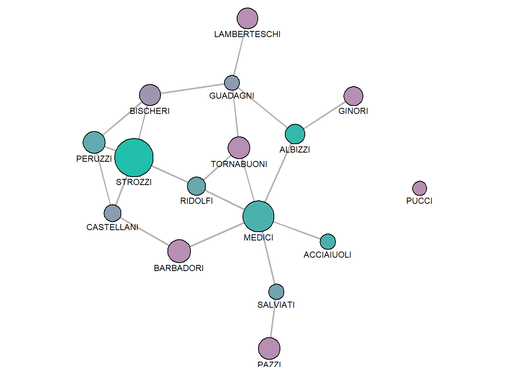
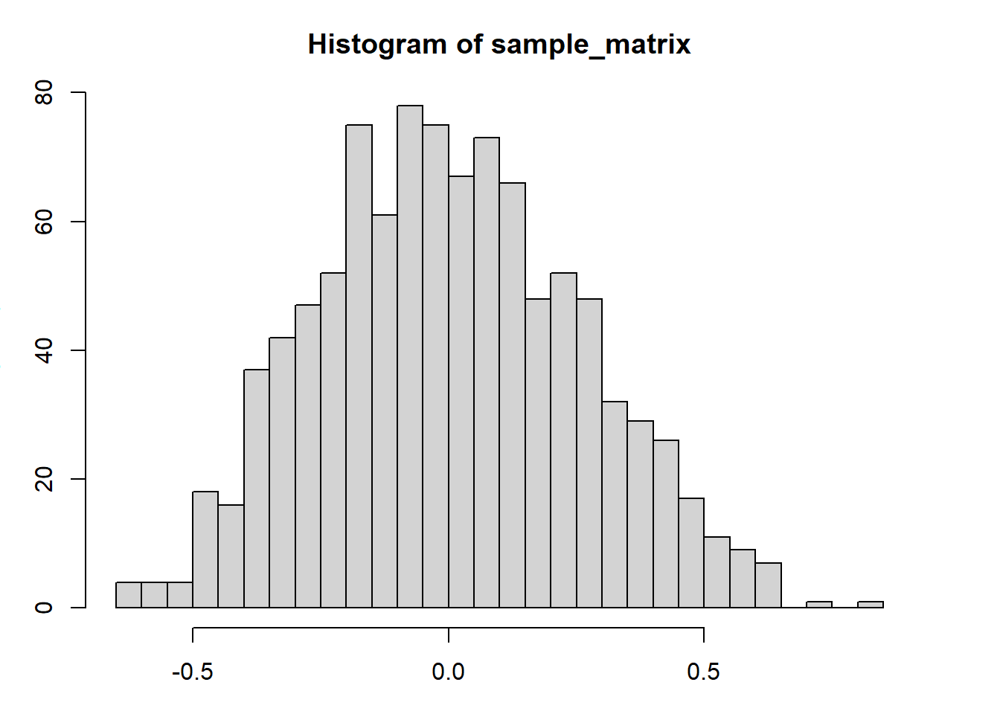
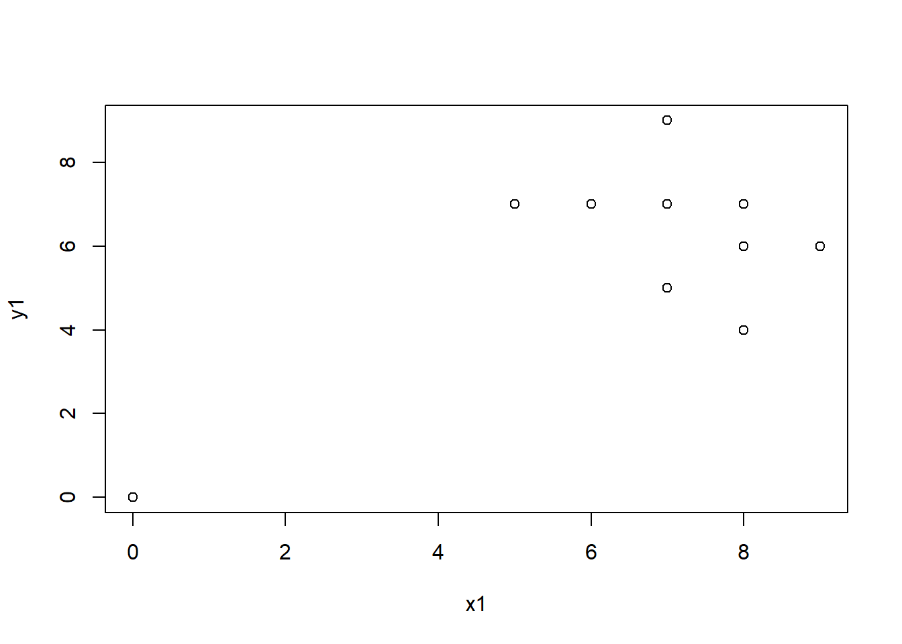
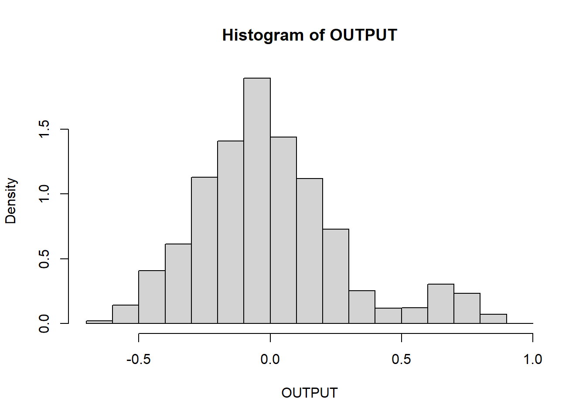
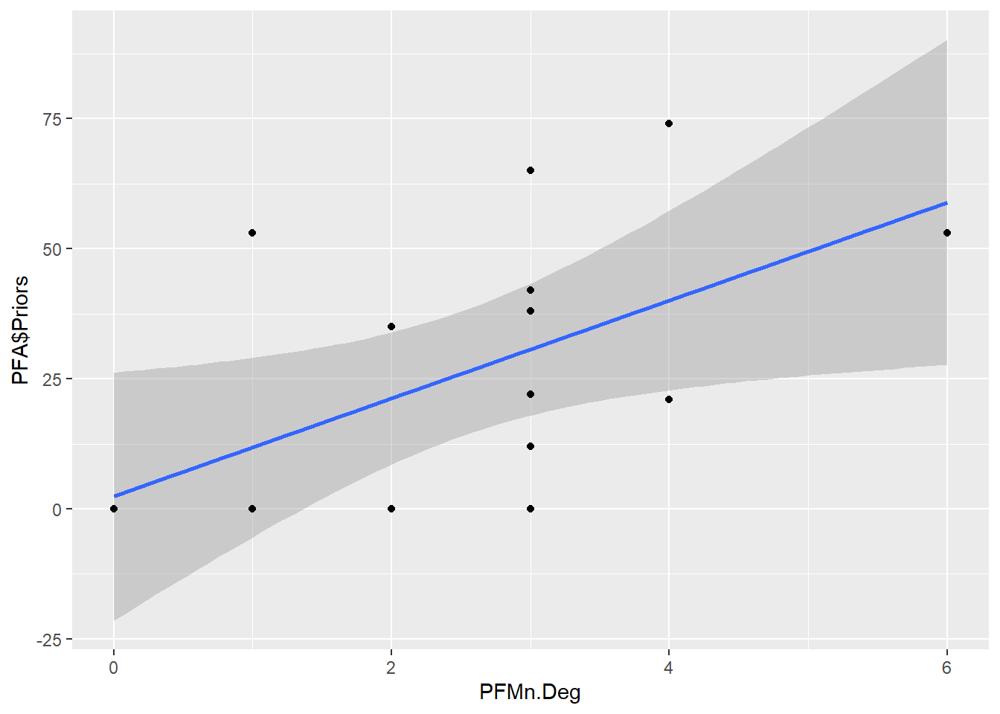

Chapter 18 Statistics about network
18.1 Florentine Families
# Libraries import
library(sna)
library(tidyverse)
# Data import
PFM<-as.matrix(read.csv("datasets/Padgett_FlorentineFamilies_Marriage.csv",
stringsAsFactors=FALSE, row.names=1))
PFA<-read.csv("datasets/Padgett_FlorentineFamilies_Attributes.csv",
stringsAsFactors=FALSE, row.names=1)
# Converting the matrix into network
PFMn<-as.network(PFM, directed=F)
summary(PFMn)## Network attributes:
## vertices = 16
## directed = FALSE
## hyper = FALSE
## loops = FALSE
## multiple = FALSE
## bipartite = FALSE
## total edges = 20
## missing edges = 0
## non-missing edges = 20
## density = 0.1666667
##
## Vertex attributes:
## vertex.names:
## character valued attribute
## 16 valid vertex names
##
## No edge attributes
##
## Network edgelist matrix:
## [,1] [,2]
## [1,] 9 1
## [2,] 6 2
## [3,] 7 2
## [4,] 9 2
## [5,] 5 3
## [6,] 9 3
## [7,] 7 4
## [8,] 11 4
## [9,] 15 4
## [10,] 11 5
## [11,] 15 5
## [12,] 8 7
## [13,] 16 7
## [14,] 13 9
## [15,] 14 9
## [16,] 16 9
## [17,] 14 10
## [18,] 15 11
## [19,] 15 13
## [20,] 16 13# Working on nodes colors...
## Defining the number of colors necessary to map wealth
n_colors<-max(PFA$Priors)-min(PFA$Priors)+1
## Create a function to generate a palette
colfunc <- colorRampPalette(c("#B78FB3", "#22BFAC"))
## Generate range
vertex_color<-colfunc(n_colors)[PFA$Priors-min(PFA$Priors)+1]
par(mar = c(0,0,0,0))
# Plotting the families based on their wealth
gplot(PFMn,
gmode="graph",
#layout
mode="fruchtermanreingold",
jitter=F,
#ties
edge.col="grey70",
#nodes
vertex.col=vertex_color,
vertex.cex=PFA$Wealth/80+1,
#labels
displaylabels=T,
label.pos=1,
label.cex=.7)
# Degree
knitr::kable(as.data.frame(sna::degree(PFMn, gmode="graph"), rownames(PFM)))| sna::degree(PFMn, gmode = “graph”) | |
|---|---|
| ACCIAIUOLI | 1 |
| ALBIZZI | 3 |
| BARBADORI | 2 |
| BISCHERI | 3 |
| CASTELLANI | 3 |
| GINORI | 1 |
| GUADAGNI | 4 |
| LAMBERTESCHI | 1 |
| MEDICI | 6 |
| PAZZI | 1 |
| PERUZZI | 3 |
| PUCCI | 0 |
| RIDOLFI | 3 |
| SALVIATI | 2 |
| STROZZI | 4 |
| TORNABUONI | 3 |
PFMn.Deg<-sna::degree(PFMn, gmode="graph")############################
# STATISTICAL TESTS
############################
## Correlation test between degree and priors
cor.test(PFMn.Deg,PFA$Priors) # positive correlation##
## Pearson's product-moment correlation
##
## data: PFMn.Deg and PFA$Priors
## t = 2.4519, df = 14, p-value = 0.02794
## alternative hypothesis: true correlation is not equal to 0
## 95 percent confidence interval:
## 0.07193331 0.82079537
## sample estimates:
## cor
## 0.5480948## Linear Model
M1<-lm(PFMn.Deg~PFA$Priors)
summary(M1)##
## Call:
## lm(formula = PFMn.Deg ~ PFA$Priors)
##
## Residuals:
## Min 1Q Median 3Q Max
## -2.36244 -0.69127 -0.02179 0.70515 2.63756
##
## Coefficients:
## Estimate Std. Error t value Pr(>|t|)
## (Intercept) 1.67341 0.46887 3.569 0.00308 **
## PFA$Priors 0.03187 0.01300 2.452 0.02794 *
## ---
## Signif. codes: 0 '***' 0.001 '**' 0.01 '*' 0.05 '.' 0.1 ' ' 1
##
## Residual standard error: 1.303 on 14 degrees of freedom
## Multiple R-squared: 0.3004, Adjusted R-squared: 0.2504
## F-statistic: 6.012 on 1 and 14 DF, p-value: 0.02794# PERMUTATION BASED APPROACH
## Data preparation
PFA.P<-PFA$Priors
sample(PFA.P) # Sample of priors with no replacement## [1] 0 42 65 38 53 21 0 0 0 12 22 0 53 35 0 74sample_matrix<-matrix(NA,1000,1) # Initializing the matrix
for (k in c(1:1000))
{
PFA.P_PERM<-sample(PFA.P) # Permutation of Priors
# Compute correlation between degree and Priors permuted
sample_matrix[k,1]<-cor(PFMn.Deg,PFA.P_PERM)
}
## Information of the Matrix with correlations
summary(sample_matrix)## V1
## Min. :-0.609659
## 1st Qu.:-0.185549
## Median :-0.010261
## Mean : 0.002817
## 3rd Qu.: 0.181273
## Max. : 0.840526## Plotting the correlation trend among samplings
par(mar=c(3,3,3,3))
hist(sample_matrix, breaks=50)
## Sum
(corRealValue<-cor(PFMn.Deg,PFA$Priors)) # Actual correlation with no sampling## [1] 0.5480948sum(sample_matrix>=corRealValue)/1000 # Mean correlation above actual cor## [1] 0.019sum(sample_matrix<=-corRealValue)/1000 # Mean correlation below actual cor## [1] 0.008# Summing them
sum(sample_matrix>=corRealValue)/1000 + sum(sample_matrix<=-corRealValue)/1000## [1] 0.027# Consinder the absolute number of correlation
sum(sample_matrix>=abs(corRealValue))/1000## [1] 0.019sum(sample_matrix<=-abs(corRealValue))/1000## [1] 0.008sum(sample_matrix>=abs(corRealValue))/1000 + sum(sample_matrix<=-abs(corRealValue))/1000## [1] 0.027# SPECIFIC DATA SAMPLING
x1<-c(7,8,6,7,0,8,9,7,8,5,9,7,8,7)
y1<-c(5,6,7,9,0,4,6,5,6,7,6,7,7,9)
plot(x1,y1)
cor(x1,y1)## [1] 0.5859543cor.test(x1,y1)##
## Pearson's product-moment correlation
##
## data: x1 and y1
## t = 2.5049, df = 12, p-value = 0.02767
## alternative hypothesis: true correlation is not equal to 0
## 95 percent confidence interval:
## 0.08035754 0.85173373
## sample estimates:
## cor
## 0.5859543# Initializing output as matrix that does not follow a
# normal distribution through permutation based approaches
OUTPUT<-matrix(NA,20000,1)
for (k in c(1:20000))
{
x1_PERM<-sample(x1)
OUTPUT[k,1]<-cor(y1,x1_PERM)
}
hist(OUTPUT, nclass=20, prob=T)
## 95%-CI
mean(OUTPUT)+sd(OUTPUT)*1.96## [1] 0.5455275mean(OUTPUT)-sd(OUTPUT)*1.96## [1] -0.5450525## 2 approaches
x <- seq(min(OUTPUT), max(OUTPUT), length = 40)
f <- dnorm(x, mean = mean(OUTPUT), sd = sd(OUTPUT))
hist(OUTPUT, nclass=20, prob=T, col="cornflowerblue")
lines(x, f, col = "blue", lwd = 2, type = "b")
curve(dnorm(x, mean=mean(OUTPUT), sd=sd(OUTPUT)),
col="darkblue", lwd=2, add=TRUE)
sum(OUTPUT>cor(x1,y1))/20000## [1] 0.06115abline(v=cor(x1,y1), lwd=3, col="red")